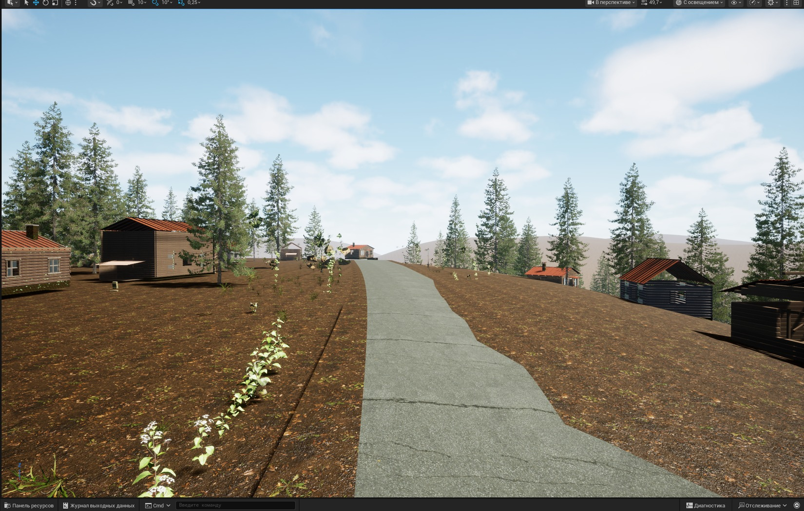
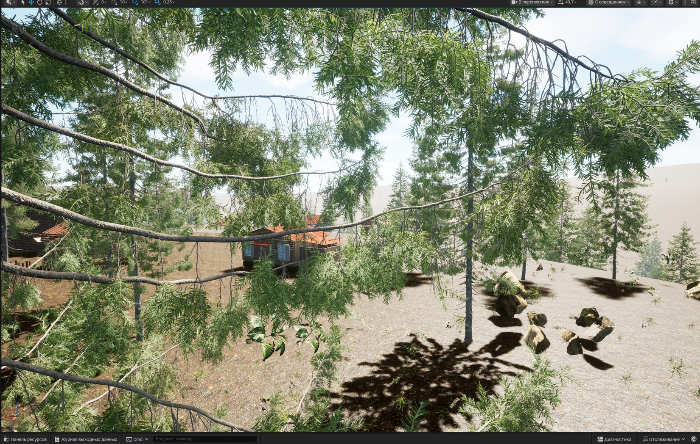
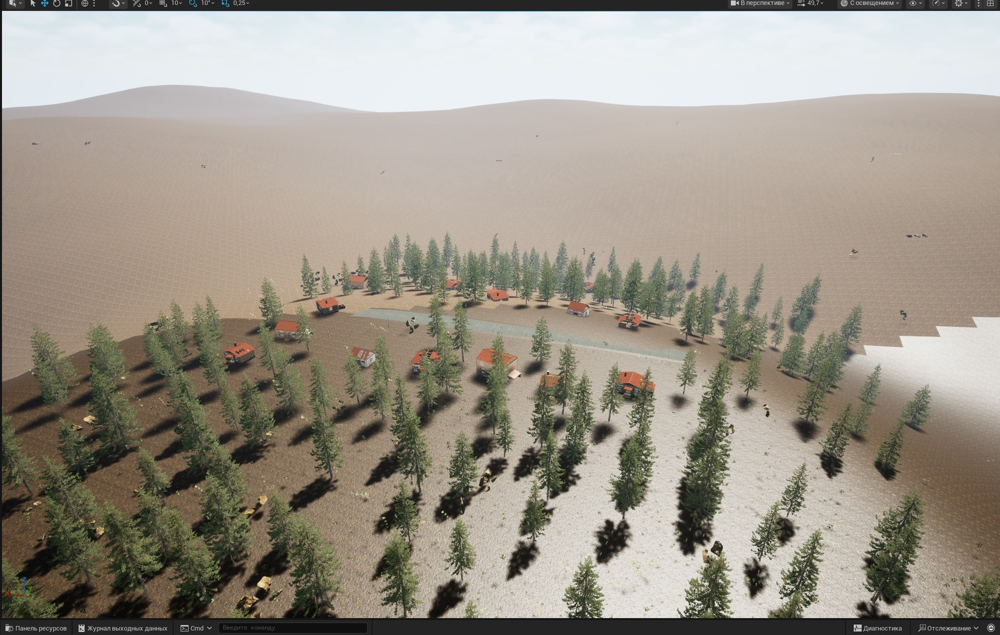

Улица — после исправлений
Подробный ракурс с поверхности: настоящая 138-метровая 3D-дорога, вертикальные ели, PBR-покрытия и постройки.
Открыть оригинал в полном размереРезультаты доработки существующего игрового уровня. Здесь только настоящие кадры редактора Unreal Engine, без ИИ-концептов и подмены игрового состояния художественными изображениями.

Подробный ракурс с поверхности: настоящая 138-метровая 3D-дорога, вертикальные ели, PBR-покрытия и постройки.
Открыть оригинал в полном размере
Проверка постройки, деревьев и рельефа вокруг сюжетного архива Любича.
Открыть оригинал в полном размере
Широкий кадр настоящей карты в UE5.8. Зеленый квартал есть, но за его границами биом ещё не закончен.
Открыть оригинал в полном размереНа ранних снимках данного прохода деревья и некоторые дома лежали или были сильно наклонены из-за неверной передачи Yaw в Pitch. Исправлено непосредственно в расположении акторов на карте, не отретушировано в изображениях.
Нужны законченное покрытие рельефа, плотная географически правильная зелёная растительность, физически корректные здания и фундаменты, полноценные интерьеры, аномалии и мутанты, сюжетные NPC, качественный звук, погодные эффекты, Play-in-Editor и упакованная Win64-сборка с FPS/памятью и сетевым тестированием.